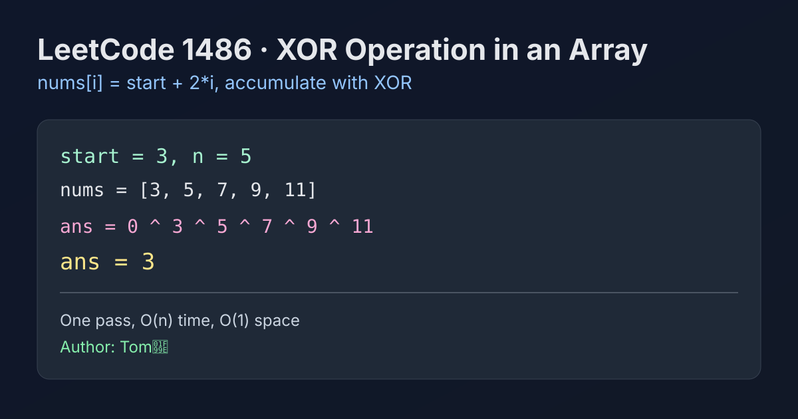

LeetCode 1486: XOR Operation in an Array (Arithmetic Construction + Bitwise Accumulation)
LeetCode 1486Bit ManipulationSimulationToday we solve LeetCode 1486 - XOR Operation in an Array.
Source: https://leetcode.com/problems/xor-operation-in-an-array/

English
Problem Summary
Given integers n and start, define nums[i] = start + 2 * i for 0 <= i < n. Return the XOR of all nums[i].
Key Insight
The problem is direct simulation: build each arithmetic-term value on the fly and fold it into an accumulator with XOR.
Algorithm
- Initialize ans = 0.
- For each index i in [0, n), compute value = start + 2*i.
- Update ans ^= value.
- Return ans.
Complexity Analysis
Time: O(n).
Space: O(1).
Reference Implementations (Java / Go / C++ / Python / JavaScript)
class Solution {
public int xorOperation(int n, int start) {
int ans = 0;
for (int i = 0; i < n; i++) {
ans ^= (start + 2 * i);
}
return ans;
}
}func xorOperation(n int, start int) int {
ans := 0
for i := 0; i < n; i++ {
ans ^= start + 2*i
}
return ans
}class Solution {
public:
int xorOperation(int n, int start) {
int ans = 0;
for (int i = 0; i < n; i++) {
ans ^= (start + 2 * i);
}
return ans;
}
};class Solution:
def xorOperation(self, n: int, start: int) -> int:
ans = 0
for i in range(n):
ans ^= start + 2 * i
return ansvar xorOperation = function(n, start) {
let ans = 0;
for (let i = 0; i < n; i++) {
ans ^= (start + 2 * i);
}
return ans;
};中文
题目概述
给定整数 n 和 start，定义数组 nums[i] = start + 2 * i（0 <= i < n）。返回数组所有元素的按位异或结果。
核心思路
这是一个直接模拟题：不需要真的存数组，按下标即时计算每项，然后持续异或到答案中即可。
算法步骤
- 初始化 ans = 0。
- 遍历 i = 0..n-1，计算 value = start + 2*i。
- 执行 ans ^= value。
- 返回 ans。
复杂度分析
时间复杂度：O(n)。
空间复杂度：O(1)。
多语言参考实现（Java / Go / C++ / Python / JavaScript）
class Solution {
public int xorOperation(int n, int start) {
int ans = 0;
for (int i = 0; i < n; i++) {
ans ^= (start + 2 * i);
}
return ans;
}
}func xorOperation(n int, start int) int {
ans := 0
for i := 0; i < n; i++ {
ans ^= start + 2*i
}
return ans
}class Solution {
public:
int xorOperation(int n, int start) {
int ans = 0;
for (int i = 0; i < n; i++) {
ans ^= (start + 2 * i);
}
return ans;
}
};class Solution:
def xorOperation(self, n: int, start: int) -> int:
ans = 0
for i in range(n):
ans ^= start + 2 * i
return ansvar xorOperation = function(n, start) {
let ans = 0;
for (let i = 0; i < n; i++) {
ans ^= (start + 2 * i);
}
return ans;
};
Comments